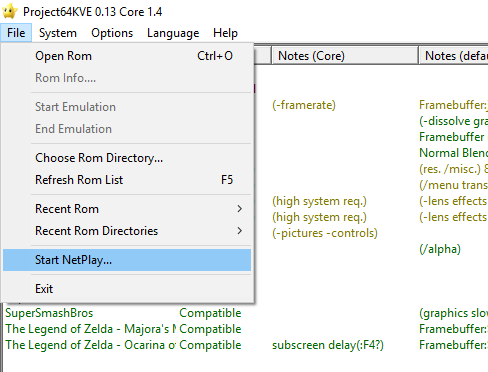
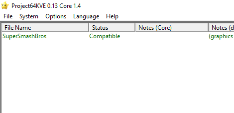

<!DOCTYPE html>
<html>
<head>
  <meta charset="UTF-8">
  <meta name="viewport" content="width=device-width, initial-scale=1.0">
  <link rel="stylesheet" href="../../css/style.css">
  <title>ZAAQ</title>
  <link rel="icon" href="../../img/icon.ico" type="image/x-icon">
</head>
	
	
</html>


<body>
  <div class="wrapper">
    <header>
      <div class="banner">
        
      </div>
    </header>

    <div class="container">
      <nav>
       <ul>
		<li><b>Menu</b></li>
		<li><a href="https://www.zaaq.fr">Accueil</a></li> 
		<li><a href="../../pages/external.html">Sites</a></li>      
		<li><a href="../../pages/mc.html">Minecraft</a></li>
		<li><a href="../../pages/ssb.html">Smash</a></li>       
		<li><a href="../../pages/contact.html">Contact</a></li>
            
          
        </ul>
      </nav>

      <section>
		<p>Si tu est la c'est que tu veux jouer a Smash en Ligne très bien cela est simple.	  </p>
			<p> Il suffit de télécharger l'émulateur Project64Kve ainsi que la rom si tu sais uttiliser un emulateur il suffit d'enregistrer le repertoire de rom et aller sur "fichier" "start netplay"
				<div class="ssb64o">
				<h1></h1>
			</div>
			<p>Si tu ne sais pas uttiliser un emulateur rejoint le discord et demande a @______ sinon suis les instruction mais c'est beaucoup plus compliqué </p>
			<p>1. télécharge Project64Kve via ce lien <a href= "Project64Kve.zip" > Télécharger l'emulateur</a></p>
			<p>2. télécharge La Rom via ce lien <a href= "SuperSmash.v64" > Télécharger Smash Bros</a></p>
			<p>3. Après avoir lancé PJ64Kve Clique sur "Fichiers" "Choose roms directory" et choisi le dossier ou tu as installer la rom</p>
			<div class="ssb64o">
			<h1></h1>
		</div>
			<p>4. Normalement le jeu s'affichera ici:</p>
			<div class="ssb64o">
			<h1></h1>

			<p>5. voila c'est fini ensuite il te reste juste à aller sur "fichier" "start netplay" pour jouer en ligne sinon vlique sur le jeu pur jouer en local</p>
			<div class="ssb64o">
			<h1></h1>
		</div>
			<p> Ensuite laisse toi guider c'est très simple (n'oublie pas de mettre un pseudo) Si jamais tu me vois (______)jouons ensembles</p>
			 (si tu rencontres des erreures ou des problèmes viens sur le discord tout est expliqué, ou demande à @______)<p/>
			 <p>pour configurer ta manette tu aura besoin de ça: <a href="manette.html">Configurer sa manette</a></p>
	  
		   <p><a href="index.html">menu</a></p>
      </section>
    </div>

    <footer>
      <p>© 2023 - ZAAQ - ArthurM</p>
    </footer>
  </div>
  <script src="script.js"></script>
</body>
</html>


